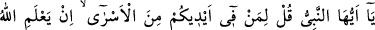
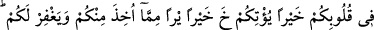
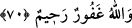

Mümine gereken temkinli hareket edip ihtiyatı elden bırakmamaktır. İctihadî bir
konuda hataen yapılan bir işten dolayı O’nun tehdidi ve azarlaması böyle olunca, kasıtlı
olarak Allah Teâlâ’nın kitabının tersine yapılan işler hakkında ne düşünürsün?! Görmez
misin Hüdhüd Süleyman (a.s.)’ın izni olmadan ordudan ayrılıp gözden kaybolmuştu da
tehdid, tekdir ve cezayı haketmişti. İşte bunun gibi sen de Sultan’ının emrine uymaz da
aksilik yaparsan cezayı hak edersin. Şâyet hizmet ve itaate devam edersen mazeretin
geçerli olur.
Yukarıda anlatılan kıssadan hata edildiği zaman ağlamanın lüzumu ortaya çıkmaktadır.
Çünkü Nebî (s.a.v.) ve Ebû Bekir (r.a.) ağlamışlardır.
Denilmiştir ki: Kıyamet günü ateş yaklaşır. Nebî (s.a.v.) onun uzaklaşması için şefaat
eder. Fakat uzaklaşmaz. Daha sonra Cebrail bir bardak su getirir ve: “Bu suyu o ateşin
yüzüne çarp.” der. Suyu atınca ateş oradan uzaklaşır. Bunun üzerine Efendimiz: “Ey
Cibrâil! Bu suyu nereden getirdin?” diye sorar. Cebrâil: “Bu, (tevbe eden) âsilerin göz
yaşlarıdır.” diye cevap verir.
Mesnevî’de şöyle denilmektir:
Bulut ağlamadıkça nasıl güler çemen?
Nasıl coşar süt, çocuk ağlamadan?
Bir günlük çocuk bile bilir yolu
Ağlayayım da yetişsin müşfik dadı, der
Sen bilmiyorsun, dadılar dadısı
Bedavadan sütü az verir, ağlamadan
70. Ey Peygamber, elinizde bulunan esirlere de ki: “Eğer Allah sizin gönlünüzde
bir hayır olduğunu bilirse, sizden alınandan daha iyisini size verir ve sizi bağışlar.
Allah bağışlayandır, esirgeyendir.”
Rivayete göre bu âyet, Peygamberimiz (a.s.)’ın amcası Abbas b. Abdulmuttalib
hakkında nâzil olmuştur. Bedir günü o da esir alınmıştı. Kervanı korumak için
Mekke’den sefere çıkan ordunun yiyeceğini taahhüd eden on kişiden birisiydi. Bunun
için Mekke’den çıkarken yanına yirmi ukıyye (sekiz yüz dirhem) altın alarak çıkmıştı.
Fakat yemek yedirme nöbeti kendisine gelmeden savaş başlamış ve kendisi de esir
olmuştu. Paraları da henüz harcamadığı için harp esnasında kendisinden alınmıştı.
Alınan bu paranın kendi fidyesinin yirmi ukiyyesi sayılmasını Hz. Peygamber (a.s.)’dan